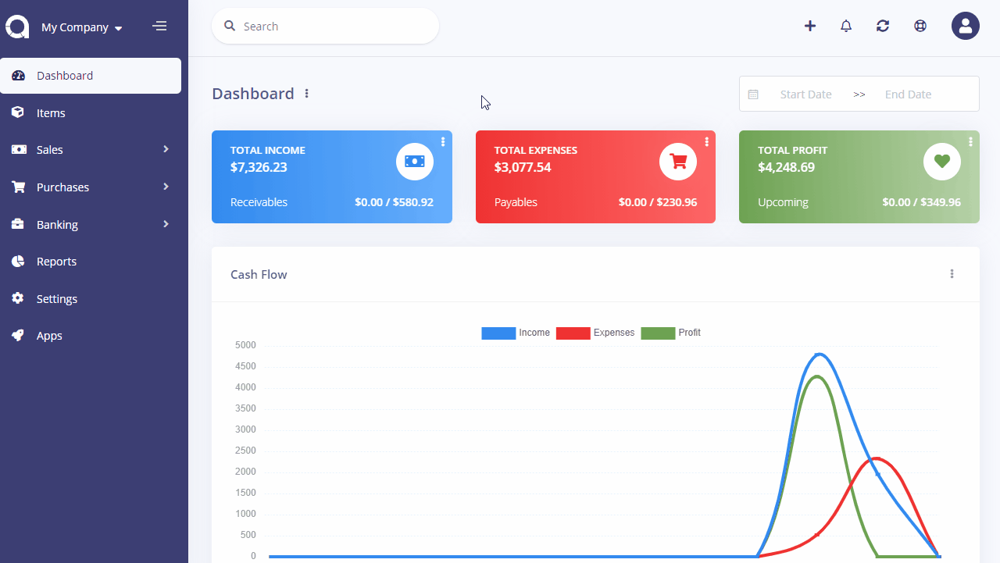

Currencies
Currencies page is located under Settings > Currencies page. On this page you can see all currencies, search for any, create a new one, edit the current ones and delete them.
The following fields are displayed:
- Name: Currency's name.
- Code: Unique ISO code of currency.
- Rate: The rate against the default currency. Default currency rate is always 1.
- Status: Status of the currency.
- Actions: You can use this button to edit, and delete the currency.

New Currency
The following fields are displayed as blank to be filled, some are required and some not. Those marked with red star are required.
- Name
- Code: The ISO code for the currency. Currency codes can be looked up at this currency converter.
- Rate: The rate against the default currency. Default currency rate is always 1.
- Precision: This defines number of fractions to be used.
- Symbol: The symbol of currency.
- Symbol Position: The position symbol.
- Decimal Mark: The mark to be used for decimal part.
- Thousands Separator: The mark to be used for thausands part.
- Enabled: Status of the currency.
- Default Currency: Set as the default currency of company. All reports are shown under the default currency.